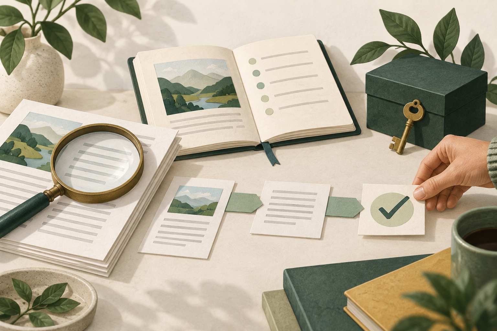
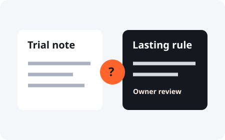

Practical AI Safety / A free field guide
Build an AI assistant
you can check.
Give it useful work. Keep a way to check its answers, its access, and what it actually did.
Start with one task and made-up data. Choose what your assistant can read, what it may change, and what needs your approval. Then test those limits before you connect real files or accounts.
Try a task check
Source
What supports the answer?
Permission
What may the assistant do?
Evidence
What proves it happened?
How do I use a personal AI assistant safely?
Check the parts that could affect you or someone else. An answer can sound right and still be wrong. A tool can work and still have more access than the task needs. A message that says “done” can leave the real work unfinished.
This guide helps you practice those checks. It does not certify an assistant, secure your accounts, or make AI error-free. A written rule only becomes a technical limit when the tool or system enforces it.
Four checks to keep close.
Browse the cards. Open a guide to try its practice case.



Fictional practice case
Your assistant says the email was sent.
You can see a draft. There is no send record from the email service. What can you confirm?
This exercise checks your choice in a made-up case. It does not inspect your assistant or your email.
Do I need to know how to code?
No. Read the guides and copy the worksheets. If you connect tools or build an app, use technical controls as well as written instructions. OWASP: AI agent security explains controls for builders.
Need a starting folder?
The personal AI assistant starter has editable setup templates and separate sample checks. Use this guide when you want to test the choices you made during setup.